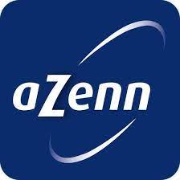
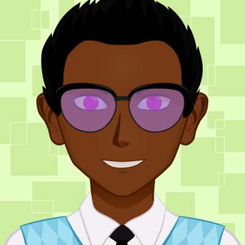
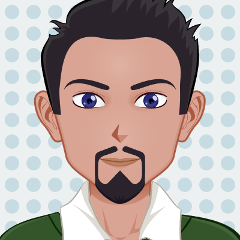
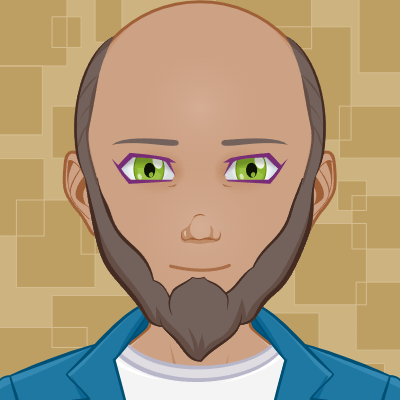

Je suis Romain SIEURIN, j'ai 19 ans et je suis actuellement en deuxième année de BTS SIO à Lyon 9. J'aime
beaucoup l'informatique, les voyages et la musique. C'est avec joie que je vous partage les résultats de mon
stage de six semaines chez
|
 |
Qui sommes-nous ?C'est donc au sein de l'entreprise |
|
C'est
10000 références
Plus de
30000 m² d'espace
de stockage
C'est
75 millions
d'€ de CA en 2023
Plus de
200 employé.e.s
conquis
C'est
7 structures
(agences et entrepots)
Le site de Satolas-et-Bonce
|
|
Pourquoi un client vient nous voir ?
Un client sollicite |
Bien que son activité soit principalement axée sur le modèle B to B, Azenn maintient une petite part de son
activité en B to C. Cette diversification stratégique contribue à renforcer sa présence sur le marché et à
répondre aux besoins variés de ses clients. Voici ci-dessous les trois engagements d'
L'objectif est de fournir des produits et services conformes aux normes élevées, tout en cherchant à améliorer de manière continue la satisfaction des clients, avec l'appui de la certification ISO-9001.
L'objectif est d'améliorer la santé et la sécurité au travail en éliminant les risques potentiels, réduisant les dangers,et favorisant un environnement professionnel plus sécurisé.
L'objectif est d'améliorer l'environnement en réduisant la pollution, la surconsommation, et la production de déchets, comme le prouve la certification ISO-14001 de l'entreprise.
Bienvenue dans la section "Mes Collègues" de mon portfolio ! Explorez brièvement les personnes avec lesquelles
j'ai eu le plaisir de travailler au quotidien. Découvrez la diversité des talents, des collaborations et des
moments partagés au sein de mon équipe professionnelle.
Si la personne possède un profil LinkedIn, en cliquant sur son nom, celui-ci s'affichera.
Mouhamadou supervise plusieurs projets au sein de l'équipe. C'est lui qui m'a accueilli et guidé tout au long de mon stage. En tant que mentor, il m'a confié les consignes du projet, me guidant depuis la collecte des besoins clients jusqu'à la finalisation du projet.
Philippe, conçoit et supervise l'architecture globale des systèmes informatiques. Il prend des décisions telles que le choix des outils pour les projets. Il joue un rôle dans la prise de décision technologique, bien qu'il ne soit pas impliqué dans le codage direct des solutions.
Annabelle assure la gestion et l'amélioration continue des normes de qualité, de sécurité et d'environnement au sein de l'organisation. Elle est également l'utilisatrice' de mon projet. Son implication a été précieuse pour garantir que le projet réponde pleinement à ses attentes.
Yann, assure la stabilité et la performance des infrastructures informatiques sur le site de Satolas. Il joue par exemple un rôle lors de l'arrivée ou du départ d'un nouvel employé en s'occupant de l'attribution et de la gestion des accès associés.
Cédric est mon tuteur de stage. Il dirige la stratégie informatique en définissant les orientations technologiques, supervisant les projets, assurant la sécurité des systèmes et veillant à l'alignement avec les objectifs exigés.
Aurélien est responsable de maintenir et mettre à jour les machines virtuelles de l'entreprise, ainsi que de déployer les projets développés par l'équipe sur les serveurs. De plus, il a également pris en charge le déploiement de mon projet de stage.
Bienvenue dans la section "Les locaux" de mon portfolio ! Situés à Satolas et Bonce, les locaux sont situés dans la
région lyonnaise et s'étendent sur un peu plus de 2,6 hectares, comprenant à la fois des espaces de bureau et
d'entrepôt. Mon expérience de stage s'est déroulée principalement dans la partie bureau, offrant un cadre
moderne et stimulant pour travailler. Ce site stratégique reflète l'engagement envers l'efficacité
opérationnelle et la croissance d'
L'entrepôt est un véritable labyrinthe vertical où d'immenses racks s'élevant sur plusieurs dizaines de mètres, où les camions vont et viennent. Ce lieu assure la logistique fluide des équipements informatiques, de leur configuration à leur expédition depuis les locaux.
Les bureaux sont situés à côté de l'entrepôt où sont regroupées l'ensemble des équipes de développement, des infrastructures réseau et des prestataires. De plus, une grande salle de réunion ainsi que la salle serveur sont également présentes.
Au sein de la Zone d'Activité Concertée (ZAC) de Chesnes, Azenn évolue dans un parc dynamique, où les entreprises prospèrent. Cet environnement favorise les collaborations et connecte stratégiquement l'entreprise à divers acteurs économiques.
Bienvenu sur la page "Blog" de mon portfolio ! Ici, vous pouvez avoir un aperçu rapide et simple de
mes activités quotidiennes. Explorez mes expériences, projets et pensées tout au long de mes deux
mois de stage chez